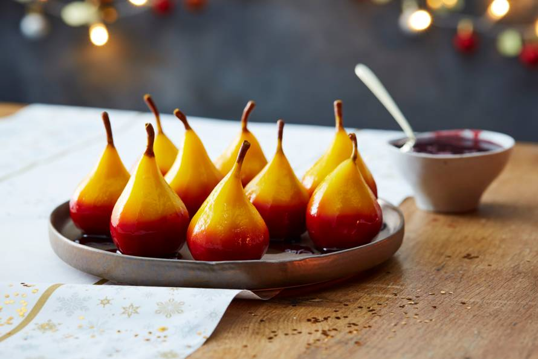

Geel-rode stoofperen

Description
Een schaal vol prachtig gekleurde stoofperen.
480 kcal - 25 min bereiden - 1 uur 40 min wachten
Ingredienten
- Halveer de citroen en pers de vrucht uit. Doe het citroensap in een grote pan. Voeg de witte wijn, suiker, kurkuma en het water toe en breng aan de kook.
- Schil ondertussen de peertjes met een dunschiller, laat het steeltje zitten. Snijd een plakje van de onderkant, zodat de peertjes goed rechtop blijven staan.
- Zet de peertjes in het wijn-watermengsel. Zorg dat ze volledig onderstaan. Leg er eventueel een bordje op als de peertjes bovendrijven. Breng aan de kook en laat 1 uur en 20 min. tegen de kook aan stoven met de deksel op de pan.
- Doe de port, bruine suiker en het bietensap in een grote ondiepe (hapjes)pan en breng aan de kook. Zet de peertjes er rechtop in, zodat ze ca. tot de helft in de port staan. Kook op laag vuur 20 min. tot ze zacht zijn, maar niet uit elkaar vallen. Controleer de gaarheid door met de satéprikker in een peertje te prikken.
- Haal de peertjes met een opscheplepel uit de pan, laat het vuur aan. Meng de maizena door het portmengsel, breng aan de kook en laat in ca. 3 min. binden. Serveer de peertjes en de portsaus apart.
- 1 Citroen
- Witte wijn
- Kristalsuiker
- Kurkuma
- Water
- Rode port
- Bietensap
- Maizena